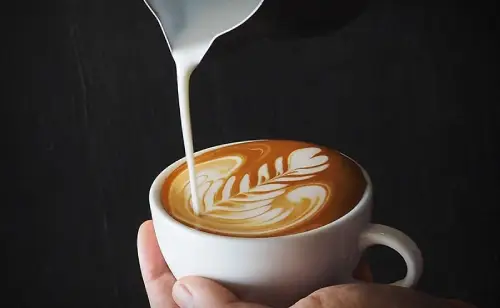

¿Quieres aprender a ser barista?

Un barista es el profesional especializado en el café de alta calidad que trabaja
creando nuevas
y diferentes bebidas basadas en él, usando varios tipos de leches, esencias y
licores, ente otros.
También es el responsable de la presentación de las bebidas y puede complementar su trabajo con el
arte latte.
Este curso esta orientado a introducirlos en el mundo del café.
modalidad de cursada
Duración: 1 Cuatrimestre. Sábados o Domingos, de 4 horas.
Plan de estudio:
-Barismo
Objetivos:
- Conocer la historia de la caficultura
- Identificar los cafés de las diferentes regiones y países
- Poder realizar diferentes preparaciones de las más simples
a las más complejas
Contenidos Mínimos:
- Historia del café
- Caficultura en el mundo
- Preparación de cafés filtrados
- Preparación básica de espresso y capucchino
- Arte latte
- Cocteleria básica
-Catación
Objetivos:
- Conocer la planta y las diferentes variedades
- Identificar los diferentes procesos de elaboración
- Identificar las diferentes calidades mediante
el análisis sensorial
Contenidos Mínimos
- Botanica y variedades
- Cultivos
- Cosecha y post cosecha
- Procesos
- Calidades
- Análisis sensorial
- Tueste
- Cataciones
Para anotarte y reservar tu lugar contacta con nosotros
no te arrepentiras,
aprenderas una nueva habilidad y te divertiras